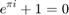
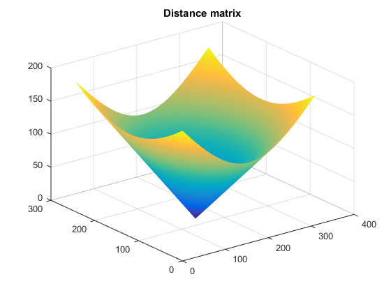
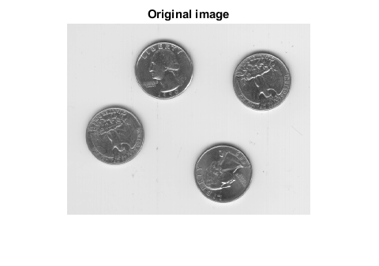
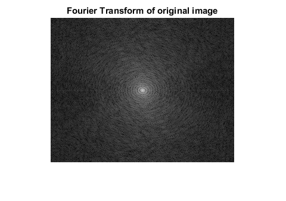
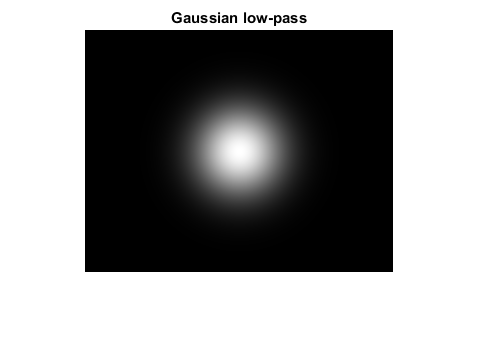
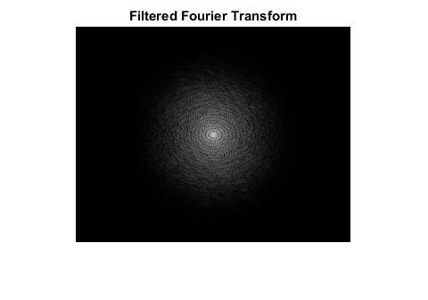

Contents
Preparing the image to work at the freqency-domain
I = imread('eight.tif'); % Generate a distance matrix. The matrix represents the distance of each % pixel from the center of the image [X,Y] = size(I);

center_dist_matrix = distmatrix(X,Y); figure, mesh(fftshift(center_dist_matrix)), title('Distance matrix'); % Show the original matrix figure, imshow(IDouble), title('Original image'); % Fourier Transform IDouble = im2double(I); I_ft = fft2(IDouble); figure, imshow(log(1+abs(fftshift(I_ft))),[]), title('Fourier Transform of original image');  
Gaussian low-pass filter with sigma = 30
sigma = 30; H_Gauss = exp(-(center_dist_matrix.^2) / (2*(sigma^2))); H_Gauss_shifted = fftshift(H_Gauss); figure, imshow(H_Gauss_shifted), title('Gaussian low-pass'); % Filter the FT image with the H_Gauss FT_gauss_filter = H_Gauss .* I_ft; I3_gauss_lpf = real(ifft2(FT_gauss_filter)); figure, imshow(log(1+abs(fftshift(FT_gauss_filter))), []), title('Filtered Fourier Transform'); figure, imshow(I3_gauss_lpf), title('Filtered image with Gaussian LPF'); 